Google Chrome
Source: https://en.wikipedia.org/wiki/Google_Chrome
Category: products_consumer
Depth: 1
Summary
Google Chrome is a cross-platform web browser developed by Google. It was launched in 2008 for Microsoft Windows and was built with free software components from Apple WebKit and Mozilla Firefox. Versions were later released for Linux, macOS, iOS, iPadOS, and Android, where it is currently the default browser. The browser is also the main component of ChromeOS, on which it serves as the platform for web applications.
Images
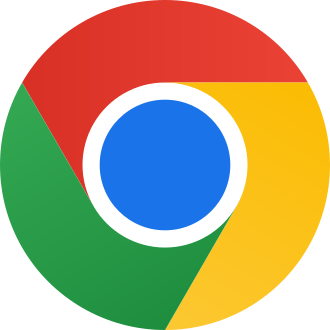
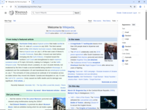
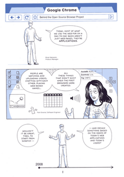
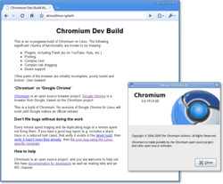
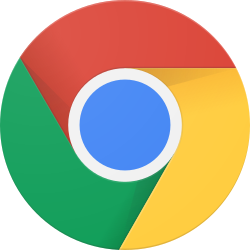
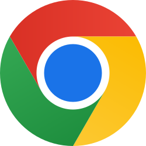
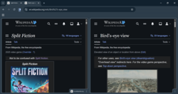
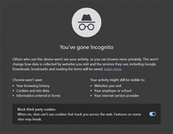
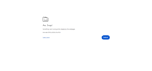
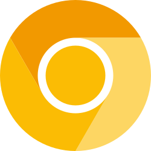
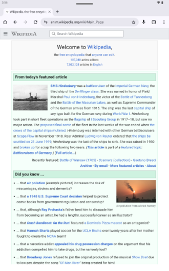
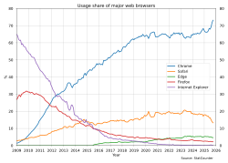
Full Article
Web browser developed by Google
This article is about the web browser. For the operating system, see ChromeOS. For other uses, see Chrome (disambiguation).
Google Chrome is a cross-platform web browser developed by Google. It was launched in 2008 for Microsoft Windows and was built with free software components from Apple WebKit and Mozilla Firefox. Versions were later released for Linux, macOS, iOS, iPadOS, and Android, where it is currently the default browser. The browser is also the main component of ChromeOS, on which it serves as the platform for web applications.
Most of Chrome's source code comes from Google's free and open-source software project known as Chromium, but Chrome is licensed as proprietary freeware. WebKit was the original rendering engine, but Google eventually forked it to create the Blink engine; every Chrome variant except iOS used Blink as of 2017.
As of March 2026,[update] StatCounter estimates that Chrome has a 75.23% worldwide browser market share on personal computers. It is the most-used browser on tablets (having far surpassed Safari), and is also dominant on smartphones. With a market share of 71.22% across all platforms combined as of December 2025[update], Chrome is the most used web browser in the world. Chrome has approximately 3.62 billion users as of March 2026.
Google chief executive Eric Schmidt was previously involved in the "browser wars" (a part of U.S. corporate history) and was against the expansion of the company into such a new area. However, Google co-founders, Sergey Brin and Larry Page, spearheaded a software demonstration that pushed Schmidt into making Chrome a core business priority, which resulted in it becoming a commercial success. Because of the proliferation of Chrome, Google has expanded the "Chrome" brand name to other products. This includes ChromeOS, Chromecast, Chromebook, Chromebit, Chromebox, and Chromebase.
History
See also: History of Google
Google chief executive Eric Schmidt opposed the development of an independent web browser for six years. He stated that "at the time, Google was a small company", and he did not want to go through "bruising browser wars". Company co-founders Sergey Brin and Larry Page hired several Mozilla Firefox developers and built a demonstration of Chrome. Afterward, Schmidt said, "It was so good that it essentially forced me to change my mind."
In September 2004, rumors of Google building a web browser first appeared. Online journals and U.S. newspapers stated at the time that Google was hiring former Microsoft web developers, among others. It also came shortly after the release of Mozilla Firefox 1.0, which was surging in popularity and taking market share from Internet Explorer, which had noted security problems.
Chrome is based on the open-source code of the Chromium project. Development of the browser began in 2006, spearheaded by Sundar Pichai.
Google has since become the world's most popular search engine. 90% of searches on search engines come from Google users.
Announcement
The release announcement was originally scheduled for September 3, 2008, and a comic by Scott McCloud was to be sent to journalists and bloggers explaining the features within the new browser. Copies intended for Europe were shipped early, and German blogger Philipp Lenssen of Google Blogoscoped made a scanned copy of the 38-page comic available on his website after receiving it on September 1, 2008. Google subsequently made the comic available on Google Books, and mentioned it on their official blog along with an explanation for the early release. The product was named "Chrome" as an initial development project code name, because it is associated with fast cars and speed. Google kept the development project name as the final release name, as a "cheeky" or ironic moniker, as one of the main aims was to minimize the user interface chrome.
Public release
The browser was first publicly released, officially as a beta version, on September 2, 2008, for Windows XP and newer, and with support for 43 languages, and later as a "stable" public release on December 11, 2008. On that same day, a CNET news item drew attention to a passage in the Terms of Service statement for the initial beta release, which seemed to grant Google a license to all content transferred via the Chrome browser. This passage was inherited from the general Google terms of service. Google responded to this criticism immediately by stating that the language used was borrowed from other products, and removed this passage from the Terms of Service.
Chrome quickly gained about 1% usage share. After the initial surge, usage share dropped until it hit a low of 0.69% in October 2008. It then started rising again and by December 2008, Chrome again passed the 1% threshold. In early January 2009, CNET reported that Google planned to release versions of Chrome for macOS and Linux in the first half of the year. The first official macOS and Linux developer previews of Chrome were announced on June 4, 2009, with a blog post saying they were missing many features and were intended for early feedback rather than general use. In December 2009, Google released beta versions of Chrome for macOS and Linux. Google Chrome 5.0, announced on May 25, 2010, was the first stable release to support all three platforms.
Chrome was one of the twelve browsers offered on BrowserChoice.eu to European Economic Area users of Microsoft Windows in 2010.
Development
Chrome was assembled from 25 different code libraries from Google and third parties such as Mozilla's Netscape Portable Runtime, Network Security Services, NPAPI (dropped as of version 45), Skia Graphics Engine, SQLite, and several other open-source projects. The V8 JavaScript virtual machine was considered a sufficiently important project to be split off (as was Adobe/Mozilla's Tamarin) and handled by a separate team in Denmark coordinated by Lars Bak. According to Google, existing implementations were designed "for small programs, where the performance and interactivity of the system weren't that important", but web applications such as Gmail "are using the web browser to the fullest when it comes to DOM manipulations and JavaScript", and therefore would significantly benefit from a JavaScript engine that could work faster.[citation needed]
Chrome initially used the WebKit rendering engine to display web pages. In 2013, they forked the WebCore component to create their own layout engine, Blink. Based on WebKit, Blink only uses WebKit's "WebCore" components, while substituting other components, such as its own multi-process architecture, in place of WebKit's native implementation. Chrome is internally tested with unit testing, automated testing of scripted user actions, fuzz testing, as well as WebKit's layout tests (99% of which Chrome is claimed to have passed), and against commonly accessed websites inside the Google index within 20–30 minutes. Google created Gears for Chrome, which added features for web developers typically relating to the building of web applications, including offline support. Google phased out Gears as the same functionality became available in the HTML5 standards.
In March 2011, Google introduced a new simplified logo to replace the previous 3D logo that had been used since the project's inception. Google designer Steve Rura explained the company's reasoning for the change: "Since Chrome is all about making your web experience as easy and clutter-free as possible, we refreshed the Chrome icon to better represent these sentiments. A simpler icon embodies the Chrome spirit – to make the web quicker, lighter, and easier for all."
On January 11, 2011, the Chrome product manager, Mike Jazayeri, announced that Chrome would remove H.264 video codec support for its HTML5 player, citing the desire to bring Google Chrome more in line with the currently available open codecs available in the Chromium project, which Chrome is based on. Despite this, on November 6, 2012, Google released a version of Chrome on Windows which added hardware-accelerated H.264 video decoding. In October 2013, Cisco announced that it was open-sourcing its H.264 codecs, and it would cover all fees required.
On February 7, 2012, Google launched Google Chrome Beta for Android 4.0 devices. On many new devices with Android 4.1 or later preinstalled, Chrome is the default browser. In May 2017, Google announced a version of Chrome for augmented reality and virtual reality devices.
Features
Google Chrome features a minimalistic user interface, with its user-interface principles later being implemented in other browsers. For example, the merging of the address bar and search bar into the omnibox or omnibar.
Web standards support
The first release of Google Chrome passed both the Acid1 and Acid2 web standards compliance tests. Beginning with version 4.0, Chrome passed all aspects of the Acid3 test, However, as of April 2017 Chrome no longer passes Acid3 due to changing consensus on Web standards.
As of May 2011,[update] Chrome has very good support for JavaScript/ECMAScript according to Ecma International's ECMAScript standards conformance Test 262 (version ES5.1 May 18, 2012). This test reports as the final score the number of tests a browser failed; hence, lower scores are better. In this test, Chrome version 37 scored 10 failed / 11,578 passed. For comparison, Firefox 19 scored 193 failed / 11,752 passed, and Internet Explorer 9 had a score of 600+ failed, while Internet Explorer 10 had a score of 7 failed.[citation needed]
In 2011, on the official CSS 2.1 test suite by the standardization organization W3C, WebKit, the Chrome rendering engine, passed 89.75% (89.38% out of 99.59% covered) CSS 2.1 tests.
On the HTML5 web standards test, Chrome 41 scored 518 out of 555 points, placing it ahead of the five most popular desktop browsers. Chrome 41 on Android scored 510 out of 555 points. Chrome 44 scored 526, only 29 points less than the maximum score.
User interface
By default, the main user interface includes back, forward, refresh/cancel, and menu buttons. A home button is not shown by default, but can be added through the Settings page to take the user to the new tab page or a custom home page.
Tabs are the main component of Chrome's user interface and have been moved to the top of the window rather than below the controls. This subtle change contrasts with many existing tabbed browsers, which are based on windows and contain tabs. Tabs, with their state, can be transferred between window containers by dragging. Each tab has its own set of controls, including the Omnibox.
The Omnibox is a URL box that combines the functions of both the address bar and search box. If a user enters the URL of a site previously searched from, Chrome allows pressing Tab to search the site again directly from the Omnibox. When a user starts typing in the Omnibox, Chrome provides suggestions for previously visited sites (based on the URL or in-page text), popular websites (not necessarily visited before – powered by Google Instant), and popular searches. Although Instant can be turned off, suggestions based on previously visited sites cannot be turned off. Chrome will also autocomplete the URLs of sites visited often. If a user types keywords into the Omnibox that do not match any previously visited websites and presses enter, Chrome will conduct the search using the default search engine.[citation needed]
One of Chrome's differentiating features is the New Tab Page, which can replace the browser home page and is displayed when a new tab is created. Originally, this showed thumbnails of the nine most visited websites, along with frequent searches, recent bookmarks, and recently closed tabs; similar to Internet Explorer and Firefox with Google Toolbar, or Opera's Speed Dial. In Google Chrome 2.0, the New Tab Page was updated to allow users to hide thumbnails they did not want to appear.
Starting in version 3.0, the New Tab Page was revamped to display thumbnails of the eight most visited websites. The thumbnails could be rearranged, pinned, and removed. Alternatively, a list of text links could be displayed instead of thumbnails. It also features a "Recently closed" bar that shows recently closed tabs and a "tips" section that displays hints and tricks for using the browser. Starting with Google Chrome 3.0, users can install themes to alter the appearance of the browser. Many free third-party themes are provided in an online gallery, accessible through a "Get themes" button in Chrome's options.
Chrome includes a bookmarks submenu that lists the user's bookmarks, provides easy access to Chrome's Bookmark Manager, and allows the user to toggle a bookmarks bar on or off.[citation needed]
On January 2, 2019, Google introduced Native Dark Theme for Chrome on Windows 10.
In 2023, it was announced that Chrome would be completely revamped, using Google's Material You design language, the revamp would include more rounded corners, Chrome colors being swapped out for a similar dynamic color system introduced in Android 12, a revamped address bar, new icons, and tabs, and a more simplified 3 dot menu.
Built-in tools
Starting with Google Chrome 4.1, the application added a built-in translation bar using Google Translate. Language translation is currently available for 52 languages. When Chrome detects a foreign language other than the user's preferred language set during the installation time, it asks the user whether or not to translate.[citation needed]
Chrome allows users to synchronize their bookmarks, history, and settings across all devices with the browser installed by sending and receiving data through a chosen Google Account, which in turn updates all signed-in instances of Chrome. This can be authenticated either through Google credentials or a sync passphrase.[citation needed]
For web developers, Chrome has an element inspector that allows users to look inside any web page's Document Object Model (DOM) structure and examine the code elements that make up the webpage.
Chrome has special URLs that load application-specific pages instead of websites or files on disk. Chrome also has a built-in ability to enable experimental features. Originally called about:labs, the address was changed to about:flags to make it less obvious to casual users.
The desktop edition of Chrome can save pages as HTML with assets in a "_files" subfolder, or as an unprocessed HTML-only document. It also offers an option to save in the MHTML format.
Desktop shortcuts and apps
Chrome allows users to make local desktop shortcuts that open web applications in the browser. The browser, when opened in this way, contains none of the regular interface except for the title bar, so as not to "interrupt anything the user is trying to do". This allows web applications to run alongside local software (similar to Mozilla Prism and Fluid).
This feature, according to Google, would be enhanced with the Chrome Web Store, a one-stop web-based web applications directory which opened in December 2010.
In September 2013, Google started making Chrome apps "For your desktop". This meant offline access, desktop shortcuts, and less dependence on Chrome—apps launch in a window separate from Chrome, and look more like native applications.
Chrome Web Store
Main article: Chrome Web Store
Announced on December 7, 2010, the Chrome Web Store allows users to install web applications as extensions to the browser, although most of these extensions function simply as links to popular web pages or games, some of the apps, like Springpad, do provide extra features like offline access. The themes and extensions have also been tightly integrated into the new store, allowing users to search the entire catalog of Chrome extras.
The Chrome Web Store was opened on February 3, 2011, with the release of Google Chrome 9.0.
Extensions
Browser extensions can modify Google Chrome. They are supported by the browser's desktop edition, but not on mobile. These extensions are written using web technologies like HTML, JavaScript, and CSS. They are distributed through Chrome Web Store, initially known as the Google Chrome Extensions Gallery. Some extensions focus on providing accessibility features. Google Tone is an extension developed by Google that when enabled, can use a computer's speakers to exchange URLs with nearby computers with an Internet connection that have the extension enabled as well.
On September 9, 2009, Google enabled extensions by default on Chrome's developer channel and provided several sample extensions for testing. In December, the Google Chrome Extensions Gallery beta began with approximately 300 extensions. It was launched on January 25, 2010, along with Google Chrome 4.0, containing approximately 1500 extensions.
In 2014, Google started preventing some Windows users from installing extensions not hosted on the Chrome Web Store. The following year Google reported a "75% drop in customer support help requests for uninstalling unwanted extensions" which led them to expand this restriction to all Windows and Mac users.
Manifest V3
See also: § Advertising: [Criticism of] Manifest V3
In October 2018, Google announced a major future update to Chrome's extension API, known as "Manifest V3" (in reference to the manifest file contained within extensions). Manifest V3 is intended to modernize the extension architecture and improve the security and performance of the browser; it adopts declarative APIs to "decrease the need for overly-broad access and enable more performant implementation by the browser", replaces background pages with feature-limited "Service Workers" to reduce resource usage, and prohibits remotely-hosted code.
Google faced criticism for this change since it limits the number of rules and types of expressions that may be checked by ad blockers. Additionally, the prohibition of remotely-hosted code will restrict the ability for ad-blocking filter lists to be updated independently of the extension itself.
Notable examples
See also: Category:Google Chrome extensions
- Adblock Plus
- Adblock for Chrome
- Cut the Rope
- Dropbox
- Evernote Web
- Facebook Messenger
- Ghostery
- Google Maps
- HTTPS Everywhere (discontinued)
- Pandora Radio
- Pixlr Express
- Privacy Badger
- Streamus (discontinued)
- TweetDeck
- Stop Tony Meow (discontinued)
- uBlock Origin (no longer available due to terms of use change on Chrome)
Speed
The JavaScript virtual machine used by Chrome, the V8 JavaScript engine, has features such as dynamic code generation, hidden class transitions, and precise garbage collection.
In 2008, several websites performed benchmark tests using the SunSpider JavaScript Benchmark tool as well as Google's own set of computationally intense benchmarks, which include ray tracing and constraint solving. They unanimously reported that Chrome performed much faster than all competitors against which it had been tested, including Safari (for Windows), Firefox 3.0, Internet Explorer 7, Opera, and Internet Explorer 8. However, on October 11, 2010, independent tests of JavaScript performance, Chrome has been scoring just behind Opera's Presto engine since it was updated in version 10.5.
On September 3, 2008, Mozilla responded by stating that their own TraceMonkey JavaScript engine (then in beta), was faster than Chrome's V8 engine in some tests. John Resig, Mozilla's JavaScript evangelist, further commented on the performance of different browsers on Google's own suite, commenting on Chrome's "decimating" of the other browsers, but he questioned whether Google's suite was representative of real programs. He stated that Firefox 3.0 performed poorly on recursion-intensive benchmarks, such as those of Google, because the Mozilla team had not implemented recursion-tracing yet.
Two weeks after Chrome's launch in 2008, the WebKit team announced a new JavaScript engine, SquirrelFish Extreme, citing a 36% speed improvement over Chrome's V8 engine.
Like most major web browsers, Chrome uses DNS prefetching to speed up website lookups, as do other browsers like Firefox, Safari, Internet Explorer (called DNS Pre-resolution), and in Opera as a UserScript (not built-in).
Chrome formerly used their now-deprecated SPDY protocol instead of only HTTP when communicating with servers that support it, such as Google services, Facebook, and Twitter. SPDY support was removed in Chrome version 51. This was due to SPDY being replaced by HTTP/2, a standard that was based upon it.[citation needed]
In November 2019, Google said it was working on several "speed badging" systems that let visitors know why a page is taking time to show up. The variations include simple text warnings and more subtle signs that indicate a site is slow. No date has been given for when the badging system will be included with the Chrome browser.
Chrome formerly supported a Data Saver feature for making pages load faster called Lite Mode. Previously, Chrome engineers Addy Osmani and Scott Little announced Lite Mode would automatically lazy-load images and iframes for faster page loads. Lite Mode was switched off in Chrome 100, citing a decrease in mobile data costs for many countries.
Security
See also: Browser security
Chrome periodically retrieves updates of two blacklists (one for phishing and one for malware), and warns users when they attempt to visit a site flagged as potentially harmful. This service is also made available for use by others via a free public API called "Google Safe Browsing API".
Chrome uses a process-allocation model to sandbox tabs. Using the principle of least privilege, each tab process cannot interact with critical memory functions (e.g. OS memory, user files) or other tab processes – similar to Microsoft's "Protected Mode" used by Internet Explorer 9 or greater. The Sandbox Team is said to have "taken this existing process boundary and made it into a jail". This enforces a computer security model whereby there are two levels of multilevel security (user and sandbox) and the sandbox can only respond to communication requests initiated by the user. On Linux sandboxing uses the seccomp mode.
In January 2015, TorrentFreak reported that using Chrome when connected to the internet using a VPN can be a serious security issue due to the browser's support for WebRTC.
On September 9, 2016, it was reported that starting with Chrome 56, users will be warned when they visit insecure HTTP websites to encourage more sites to make the transition to HTTPS.
On December 4, 2018, Google announced its Chrome 71 release with new security features, including a built-in ad-blocking system. In addition, Google also announced its plan to crack down on websites that make people involuntarily subscribe to mobile subscription plans.
On September 2, 2020, with the release of Chrome 85, Google extended support for Secure DNS in Chrome for Android. DNS-over-HTTPS (DoH) was designed to improve safety and privacy while browsing the web. Under the update, Chrome automatically switches to DNS-over-HTTPS (DoH) if the current DNS provider supports the feature.
Password management
Windows
Since 2008, Chrome has been faulted for not including a master password to prevent casual access to a user's passwords. Chrome developers have indicated that a master password does not provide real security against determined hackers and have refused to implement one. Bugs filed on this issue have been marked "WontFix". As of February 2014,[update] Google Chrome asks the user to enter their Windows account password before showing saved passwords.
Linux
On Linux, Google Chrome/Chromium can store passwords in three ways: GNOME Keyring, KWallet, or plain text. Google Chrome/Chromium chooses which store to use automatically, based on the desktop environment in use. Passwords stored in GNOME Keyring or KWallet are encrypted on disk, and access to them is controlled by dedicated daemon software. Passwords stored in plain text are not encrypted. Because of this, when either GNOME Keyring or KWallet is in use, any unencrypted passwords that have been stored previously are automatically moved into the encrypted store. Support for using GNOME Keyring and KWallet was added in version 6, but using these (when available) was not made the default mode until version 12.[citation needed]
macOS
As of version 45, the Google Chrome password manager is no longer integrated with Keychain, since the interoperability goal is no longer possible.
Security vulnerabilities
No security vulnerabilities in Chrome were exploited in the three years of Pwn2Own from 2009 to 2011. At Pwn2Own 2012, Chrome was defeated by a French team who used zero-day exploits in the version of Flash shipped with Chrome to take complete control of a fully patched 64-bit Windows 7 PC using a booby-trapped website that overcame Chrome's sandboxing.
Chrome was compromised twice at the 2012 CanSecWest Pwnium. Google's official response to the exploits was delivered by Jason Kersey, who congratulated the researchers, noting "We also believe that both submissions are works of art and deserve wider sharing and recognition." Fixes for these vulnerabilities were deployed within 10 hours of the submission.
A significant number of security vulnerabilities in Chrome occurred in the Adobe Flash Player. For example, the 2016 Pwn2Own successful attack on Chrome relied on four security vulnerabilities. Two of the vulnerabilities were in Flash, one was in Chrome, and one was in the Windows kernel. In 2016, Google announced that it was planning to phase out Flash Player in Chrome, starting in version 53. The first phase of the plan was to disable Flash for ads and "background analytics", with the ultimate goal of disabling it completely by the end of the year, except on specific sites that Google has deemed to be broken without it. Flash would then be re-enabled with the exclusion of ads and background analytics on a site-by-site basis.
Leaked documents from 2013 to 2016 codenamed Vault 7 detail the capabilities of the United States Central Intelligence Agency, such as the ability to compromise web browsers (including Google Chrome).
Malware blocking and ad blocking
Google introduced download scanning protection in Chrome 17. In February 2018, Google introduced an ad blocking feature based on recommendations from the Interactive Advertising Bureau. Sites that employ invasive ads are given a 30-day warning, after which their ads will be blocked. Consumer Reports recommended users install dedicated ad-blocking tools instead, which offer increased security against malware and tracking.
Plugins
- Chrome supported, up to version 45, plug-ins with the Netscape Plugin Application Programming Interface (NPAPI), so that plug-ins (for example Adobe Flash Player) run as unrestricted separate processes outside the browser and cannot be sandboxed as tabs are. ActiveX is not supported. Since 2010, Adobe Flash has been integral to Chrome and does not need be installed separately. Flash is kept up to date as part of Chrome's own updates. Java applet support was available in Chrome with Java 6 update 12 and above. Support for Java under macOS was provided by a Java Update released on May 18, 2010.
- On August 12, 2009, Google introduced a replacement for NPAPI that is more portable and more secure called Pepper Plugin API (PPAPI). The default bundled PPAPI Flash Player (or Pepper-based Flash Player) was available on ChromeOS first, then replaced the NPAPI Flash Player on Linux from Chrome version 20, on Windows from version 21 (which also reduced Flash crashes by 20%), and eventually came to macOS at version 23.
- On September 23, 2013, Google announced that it would be deprecating and then removing NPAPI support. NPAPI support was removed from Linux in Chrome release 35. NPAPI plugins like Java can no longer work in Chrome (but there are workarounds for Flash by using PPAPI Flash Player on Linux including for Chromium).
- On April 14, 2015, Google released Chrome v42, disabling the NPAPI by default. This makes plugins that do not have a PPAPI plugin counterpart incompatible with Chrome, such as Java, Silverlight, and Unity. However, NPAPI support could be enabled through the chrome://flags menu until the release of version 45 on September 1, 2015, which removed NPAPI support entirely.
Privacy
Do Not Track
In February 2012, Google announced that Chrome would implement the Do Not Track (DNT) standard to inform websites of the user's desire not to be tracked. The protocol was implemented in version 23. In line with the W3's draft standard for DNT, it is turned off by default in Chrome.
Privacy benchmarks
A study from 2020 depicts that there are two tiers of browsers in terms of privacy: the privacy-focused ones (Brave, DuckDuckGo and Firefox-Focus) perform better than popular ones (Chrome, Firefox, and Safari). It was shown that Chrome collects 20 types of data (fingerprinting, cookies, tracking scripts, browser history, purchase history, ads, etc) as compared with 6 of the average competitor — which seems to explain that difference in the benchmark. This led some experts in privacy and cybersecurity to recommend the use of other more privacy-friendly browsers instead of Chrome.
Incognito mode
"Incognito mode" redirects here. For the general term, see Private browsing. For other uses, see Incognito (disambiguation).
The private browsing feature called Incognito mode prevents the browser from locally storing any history information, cookies, site data, or form inputs. Downloaded files and bookmarks will be stored. In addition, user activity is not hidden from visited websites or the Internet service provider. Incognito mode is similar to the private browsing feature in other web browsers.
The iOS version of Chrome also supports the optional ability to lock incognito tabs with Face ID, Touch ID, or the device's passcode. In 2022, Google began to implement this feature into Android versions of Chrome. From 2023, this feature is available for Android 12 devices and above, when the hardware allows it.
In 2024, Google agreed to destroy billions of records to settle a lawsuit claiming it secretly tracked the internet use of people who thought they were browsing privately in incognito mode.
Stability
A multi-process architecture is implemented in Chrome where, by default, a separate process is allocated to each site instance and plugin. This procedure is termed process isolation, and raises security and stability by preventing tasks from interfering with each other. An attacker successfully gaining access to one application gains access to no others, and failure in one instance results in a Sad Tab screen of death, similar to the well-known Sad Mac, but only one tab crashes instead of the whole application. This strategy exacts a fixed per-process cost up front, but results in less memory bloat over time as fragmentation is confined to each instance and no longer needs further memory allocations. This architecture was later adopted in Safari and Firefox.
Chrome includes a process management utility called Task Manager which lets users see what sites and plugins are using the most memory, downloading the most bytes, and overusing the CPU and provides the ability to terminate them. Chrome Version 23 ensures its users an improved battery life for the systems supporting Chrome's GPU accelerated video decoding.
Release channels, cycles, and updates
The first production release on December 11, 2008, marked the end of the initial Beta test period and the beginning of production. Shortly thereafter, on January 8, 2009, Google announced an updated release system with three channels: Stable (corresponding to the traditional production), Beta, and Developer preview (also called the "Dev" channel). Where there were before only two channels: Beta and Developer, now there are three. Concurrently, all Developer channel users were moved to the Beta channel along with the promoted Developer release. Google explained that now the Developer channel builds would be less stable and polished than those from the initial Google Chrome Beta period. Beta users could opt back to the Developer channel as desired.[citation needed]
Each channel has its own release cycle and stability level. The Stable channel is updated roughly quarterly, with features and fixes that passed "thorough" testing in the Beta channel. Beta is updated roughly monthly, with "stable and complete" features migrated from the Developer channel. The Developer channel is updated once or twice per week and was where ideas and features were first publicly exposed, "(and sometimes fail) and can be very unstable at times". [Quoted remarks from Google's policy announcements.]
On July 22, 2010, Google announced it would ramp up the speed at which it releases new stable versions; the release cycles were shortened from quarterly to six weeks for major Stable updates. Beta channel releases now come roughly at the same rate as Stable releases, though approximately one month in advance, while Dev channel releases appear roughly once or twice weekly, allowing time for basic release-critical testing. This faster release cycle also brought a fourth channel: the "Canary" channel, updated daily from a build produced at 09:00 UTC from the most stable of the last 40 revisions. The name refers to the practice of using canaries in coal mines, so if a change "kills" Chrome Canary, it will be blocked from migrating down to the Developer channel, at least until fixed in a subsequent Canary build. Canary is "the most bleeding-edge official version of Chrome and somewhat of a mix between Chrome dev and the Chromium snapshot builds". Canary releases run side by side with any other channel; it is not linked to the other Google Chrome installation and can therefore run different synchronization profiles, themes, and browser preferences. This ensures that fallback functionality remains even when some Canary updates may contain release-breaking bugs. It does not natively include the option to be the default browser, although on Windows and macOS it can be set through System Preferences. Canary was Windows-only at first; a macOS version was released on May 3, 2011.
The Chrome beta channel for Android was launched on January 10, 2013; like Canary, it runs side by side with the stable channel for Android. Chrome Dev for Android was launched on April 29, 2015.
All Chrome channels are automatically distributed according to their respective release cycles. The mechanism differs by platform. On Windows, it uses Google Update, and auto-update can be controlled via Group Policy. Alternatively, users may download a standalone installer of a version of Chrome that does not auto-update. On macOS, it uses Google Update Service, and auto-update can be controlled via the macOS "defaults" system. On Linux, it lets the system's normal package management system supply the updates. This auto-updating behavior is a key difference from Chromium, the non-branded open-source browser which forms the core of Google Chrome. Because Chromium also serves as the pre-release development trunk for Chrome, its revisions are provided as source code, and buildable snapshots are produced continuously with each new commit, requiring users to manage their own browser updates.
In March 2021, Google announced that starting with Chrome 94 in the third quarter of 2021, Google Chrome Stable releases will be made every four weeks, instead of six weeks as they have been since 2010. Also, Google announced a new release channel for system administrators and browser embedders with releases every eight weeks.
Release version numbers
- Releases are identified by a four-part version number, e.g., 42.0.2311.90 (Windows Stable release April 14, 2015). The components are major.minor.build.patch.
-
Major.minor reflects scheduling policy[citation needed]
-
Build.patch identifies content progression[citation needed]
- Major represents a product release. These are scheduled 7–8 per year, unlike other software systems where the major version number updates only with substantial new content.
- Minor is usually 0. References to version 'x' or 'x.0', e.g., 42.0, refer to this major.minor designation.
- Build is ever-increasing. For a release cycle, e.g., 42.0, there are several builds in the Canary and Developer periods. The last build number from Developer is kept throughout Beta and Stable and is locked with the major.minor for that release.
- Patch resets with each build, incrementing with each patch. The first patch is 0, but usually the first publicly released patch is somewhat higher. In Beta and Stable, only patch increments.[citation needed]
Chromium and Chrome release schedules are linked through Chromium (Major) version Branch Point dates, published annually. The Branch Points precede the final Chrome Developer build (initial) release by 4 days (nearly always) and the Chrome Stable initial release by roughly 53 days.
Example: The version 42 Branch Point was February 20, 2015. Developer builds stopped advancing at build 2311 with release 42.0.2311.4 on February 24, 4 days later. The first Stable release, 42.0.2311.90, was April 14, 2015, 53 days after the Branch Point.[citation needed]
Color management
Main article: Color management
Chrome supports color management by using the system-provided ICC v2 and v4 support on macOS, and from version 22 supports ICC v2 profiles by default on other platforms.
Dinosaur Game
Main article: Dinosaur Game
In Chrome, when not connected to the Internet and an error message displaying "No internet" is shown, on the top, an "8-bit" Tyrannosaurus rex is shown, but when pressing the space bar on a keyboard, mouse-clicking on it or tapping it on touch devices, the T-Rex instantly jumps once and starts dashing across a cactus-ridden desert, revealing it to be an Easter egg in the form of a platform game. The game itself is an infinite runner, and there is no time limit in the game as it progresses faster and periodically tints to a black background. A school or enterprise manager can disable the game.
Platforms
The current version of Chrome runs on:
- Windows 10 or later
- Windows Server 2016 or later
- macOS Monterey or later
- 64-bit versions of Ubuntu 18.04+, Debian 10+, openSUSE 15.5+, and Fedora 39+
- Android 10 or later
- iOS 17 or later
- iPadOS 17 or later
As of April 2016,[update] stable 32-bit and 64-bit builds are available for Windows, with only 64-bit stable builds available for Linux and macOS. 64-bit Windows builds became available in the developer channel and as canary builds on June 3, 2014, in the beta channel on July 30, 2014, and in the stable channel on August 26, 2014. 64-bit macOS builds became available as canary builds on November 7, 2013, in the beta channel on October 9, 2014, and in the stable channel on November 18, 2014.
Starting with the release of version 89, Chrome will only be supported on Intel/Intel x86 and AMD processors with the SSE3 instruction set.
| Operating system | Latest version | Support status | |
|---|---|---|---|
| Windows | 10 or later, Server 2016 or later | 147 | 2015– |
| 7, Server 2008 R2, 8, Server 2012, 8.1 and Server 2012 R2 | 109 | 2009–2023 | |
| XP, Server 2003, Vista and Server 2008 | 49 (IA-32) | 2008–2016 | |
| macOS | Ventura or later | 147 | 2022– |
| Monterey | 147 | 2021–2026 | |
| Big Sur | 138 | 2020–2025 | |
| Catalina | 128 | 2019–2024 | |
| High Sierra and Mojave | 116 | 2017–2023 | |
| El Capitan and Sierra | 103 | 2015–2022 | |
| Yosemite | 87 | 2014–2021 | |
| Mavericks | 67 | 2013–2018 | |
| Snow Leopard–Mountain Lion (x64) | 49 | 2009–2016 | |
| Snow Leopard (IA-32) | 38 | 2009–2014 | |
| Leopard (IA-32, x64) | 21 | 2008–2012 | |
| Linux (X11/Wayland) | x64 | 147 | 2008– |
| IA-32 | 48 | 2008–2016 | |
| Android | 10 or later | 147 | 2019– |
| Oreo and Pie | 138 | 2017–2025 | |
| Nougat | 119 | 2016–2023 | |
| Marshmallow | 106 | 2015–2022 | |
| Lollipop | 95 | 2014–2021 | |
| KitKat | 81 | 2013–2020 | |
| Jelly Bean (ARMv7,IA-32,x64) | 71 | 2012–2019 | |
| Ice Cream Sandwich (ARMv7,IA-32) | 42 | 2012–2015 | |
| iOS | 17.0 or later | 147 | 2023– |
| 16.x | 137 | 2022–2025 | |
| 15.x | 125 | 2021–2024 | |
| 14.x | 113 | 2020–2023 | |
| 13.x | 93 | 2019–2021 | |
| 12.x | 92 | 2018–2021 | |
| 11.x | 76 | 2017–2019 | |
| 10.x | 71 | 2016–2019 | |
| 9.x | 63 | 2015–2018 | |
| 7.0-8.4 | 47 | 2013–2016 | |
| 6.x | 37 | 2012–2014 | |
| 4.3-5.1 | 29 | 2011–2013 | |
| 3.0-4.2 | 23 | 2009–2012 | |
| iPadOS | 17.0 or later | 147 | 2023– |
| 16.x | 137 | 2022–2025 | |
| 15.x | 125 | 2021–2024 | |
| 14.x | 113 | 2020–2023 | |
| 13.x | 93 | 2019–2021 |
Android
A beta version for Android 4.0 devices was launched on February 7, 2012, available for a limited number of countries from Google Play.
Notable features: synchronization with desktop Chrome to provide the same bookmarks and view the same browser tabs, page pre-rendering, hardware acceleration.
Many of the latest HTML5 features: almost all of the Web Platform's features: GPU-accelerated canvas, including CSS 3D Transforms, CSS animations, SVG, WebSocket (including binary messages), Dedicated Workers; it has overflow scroll support, strong HTML5 video support, and new capabilities such as IndexedDB, WebWorkers, Application Cache and the File APIs, date- and time-pickers, parts of the Media Capture API. Also supports mobile oriented features such as Device Orientation and Geolocation.
Mobile customizations: swipe gesture tab switching, link preview allows zooming in on (multiple) links to ensure the desired one is clicked, font size boosting to ensure readability regardless of the zoom level.
Features missing in the mobile version include sandboxed tabs, Safe Browsing, apps or extensions, Adobe Flash (now and in the future), Native Client, and the ability to export user data such a list of their opened tabs or their browsing history into portable local files.
Development changes: remote debugging, part of the browser layer has been implemented in Java, communicating with the rest of the Chromium and WebKit code through Java Native Bindings. The code of Chrome for Android is a fork of the Chromium project. It is a priority to upstream most new and modified code to Chromium and WebKit to resolve the fork.
The April 17, 2012, update included availability in 31 additional languages and in all countries where Google Play is available. A desktop version of a website can also be requested, as opposed to a mobile version. In addition, Android users can now add bookmarks to their Android home screens if they choose and decide which apps should handle links opened in Chrome.
On June 27, 2012, Google Chrome for Android exited beta and became stable.
Chrome 18.0.1026311, released on September 26, 2012, was the first version of Chrome for Android to support mobile devices based on Intel x86.
Starting from version 25, the Chrome version for Android is aligned with the desktop version, and usually new stable releases are available at the same time for both the Android and the desktop versions. Google released a separate Chrome for Android beta channel on January 10, 2013, with version 25. As of 2013[update] a separate beta version of Chrome is available in the Google Play Store – it can run side by side with the stable release.
iOS and iPadOS
Chrome is available on Apple's mobile iOS and iPadOS operating systems. Released in the Apple App Store on June 26, 2012, it supports the iPad, iPhone, and formerly the iPod touch; the current version requires that the device has iOS 17.0 or greater or iPadOS 17.0 or greater installed. In accordance with Apple's requirements for browsers released through their App Store, this version of Chrome uses the iOS WebKit – which is Apple's own mobile rendering engine and components, developed for their Safari browser – therefore it is restricted from using Google's own V8 JavaScript engine. Chrome is the default web browser for the iOS and iPadOS Gmail application.[citation needed]
In a review by Chitika, Chrome was noted as having 1.5% of the iOS web browser market as of July 18, 2012.[update] In October 2013, Chrome had 3% of the iOS browser market.[needs update]
Linux
On Linux distributions, support for 32-bit Intel processors ended in March 2016, although Chromium is still supported. As of Chrome version 26, Linux installations of the browser may be updated only on systems that support GCC v4.6 and GTK v2.24 or later. Thus deprecated systems include (for example) Debian 6's 2.20, and RHEL 6's 2.18.
Windows
Support for Google Chrome on Windows XP and Windows Vista ended in April 2016. The last release of Google Chrome that can be run on Windows XP and Vista was version 49.0.2623.112, released on April 7, 2016, then re-released on April 11, 2016.
Support for Google Chrome on Windows 7 was originally supposed to end on July 15, 2021. However, the date was moved back to January 15, 2022, due to the ongoing COVID-19 pandemic. Since enterprises took more time to migrate to Windows 10 or 11, the end of support date was pushed back again until January 15, 2023. Support for not only Windows 7, but also Windows 8 and 8.1 ended on this date. The last version to support these versions of Windows is Chrome 109.
"Windows 8 mode" was introduced in 2012 and has since been discontinued. It was provided to the developer channel, which enabled Windows 8 and 8.1 users to run Chrome with a full-screen, tablet-optimized interface, with access to snapping, sharing, and search functionalities. In October 2013, Windows 8 mode on the developer channel changed to use a desktop environment mimicking the interface of ChromeOS with a dedicated windowing system and taskbar for web apps. This was removed on version 49 and users that have upgraded to Windows 10 will lose this feature.
macOS
Google dropped support for Mac OS X 10.5 with the release of Chrome 22. Support for 32-bit versions of Chrome ended in November 2014 with the release of Chrome 39. Support for Mac OS X 10.6, OS X 10.7, and OS X 10.8 ended in April 2016 with the release of Chrome 50. Support for OS X 10.9 ended in April 2018 with the release of Chrome 66. Support for OS X 10.10 ended in January 2021 with the release of Chrome 88. Support for OS X 10.11 and macOS 10.12 ended in August 2022 with the release of Chrome 104. Support for macOS 10.13 and macOS 10.14 ended in September 2023 with the release of Chrome 117. Support for macOS 10.15 ended in September 2024 with the release of Chrome 129. Support for macOS 11 ended in August 2025 with the release of Chrome 139.
ChromeOS
Main article: ChromeOS
Google Chrome is the basis of Google's ChromeOS operating system that ships on specific hardware from Google's manufacturing partners. The user interface has a minimalist design resembling the Google Chrome browser. ChromeOS is aimed at users who spend most of their computer time on the Web; the only applications on the devices are a browser incorporating a media player and a file manager.
Google announced ChromeOS on July 7, 2009.
Reception
| This section needs to be updated. Please help update this article to reflect recent events or newly available information. (June 2019) |
Google Chrome was met with acclaim upon release. In 2008, Matthew Moore of The Daily Telegraph summarized the verdict of early reviewers: "Google Chrome is attractive, fast and has some impressive new features..."
Initially, Microsoft reportedly played down the threat from Chrome and predicted that most people would embrace Internet Explorer 8. Opera Software said that "Chrome will strengthen the Web as the biggest application platform in the world". But by February 25, 2010, BusinessWeek had reported that "For the first time in years, energy and resources are being poured into browsers, the ubiquitous programs for accessing content on the Web. Credit for this trend – a boon to consumers – goes to two parties. The first is Google, whose big plans for the Chrome browser have shaken Microsoft out of its competitive torpor and forced the software giant to pay fresh attention to its own browser, Internet Explorer. Microsoft all but ceased efforts to enhance IE after it triumphed in the last browser war, sending Netscape to its doom. Now it's back in gear." Mozilla said that Chrome's introduction into the web browser market comes as "no real surprise", that "Chrome is not aimed at competing with Firefox", and furthermore that it would not affect Google's revenue relationship with Mozilla.
Chrome's design bridges the gap between desktop and so-called "cloud computing". At the touch of a button, Chrome lets you make a desktop, Start menu, or QuickLaunch shortcut to any Web page or Web application, blurring the line between what's online and what's inside your PC. For example, I created a desktop shortcut for Google Maps. When you create a shortcut for a Web application, Chrome strips away all of the toolbars and tabs from the window, leaving you with something that feels much more like a desktop application than like a Web application or page.
— PC World
With its dominance in the web browser market, Google has been accused of using Chrome and Blink development to push new web standards that are proposed in-house by Google and subsequently implemented by its services first and foremost. These have led to performance disadvantages and compatibility issues with competing browsers, and in some cases, developers intentionally refusing to test their websites on any other browser than Chrome. Tom Warren of The Verge went as far as comparing Chrome to Internet Explorer 6, the default browser of Windows XP that was often targeted by competitors due to its similar ubiquity in the early 2000s. In 2021, computer scientist and lawyer Jonathan Mayer stated that Chrome has increasingly become an agent for Google LLC than a user agent, as it is "the only major web browser that lacks meaningful privacy protections by default, shoves users toward linking activity with a Google Account, and implements invasive new advertising capabilities."
Criticism
Privacy
Incognito mode
A class-action lawsuit seeking $5 billion in damages was filed against Google in 2020 because it misled consumers into thinking it would not track them when using incognito mode, despite using various means to do so. In December 2023, a settlement was reportedly agreed to, and a proposed settlement agreement was filed in federal court on April 1, 2024. It stated that Google would delete billions of browsing-data records, revise disclosures about data collection in Incognito mode, and allow users to block third-party cookies in Incognito for five years. However, the agreement did not include monetary damages and remained subject to court approval.
Listening capabilities
In June 2015, the Debian developer community discovered that Chromium 43 and Chrome 43 were programmed to download the Hotword Shared Module, which could enable the OK Google voice recognition extension, although by default it was "off". This raised privacy concerns in the media. The module was removed in Chrome 45, which was released on September 1, 2015, and was only present in Chrome 43 and 44.
User tracking concerns
Chrome sends details about its users and their activities to Google through both optional and non-optional user tracking mechanisms.
Some of the tracking mechanisms can be optionally enabled and disabled through the installation interface and through the browser's options dialog. Unofficial builds, such as SRWare Iron, seek to remove these features from the browser altogether. The RLZ library, which is used to measure the success of marketing promotions, is not included in the Chromium browser either.
In March 2010, Google devised a new method to collect installation statistics: the unique ID token included with Chrome is now used for only the first connection that Google Update makes to its server.
The optional suggestion service included in Google Chrome has been criticized because it provides the information typed into the Omnibox to the search provider before the user even hits return. This allows the search engine to provide URL suggestions, but also provides them with web use information tied to an IP address.
Chrome previously was able to suggest similar pages when a page could not be found. For this, in some cases, Google servers were contacted. The feature has since been removed.
A 2019 review by Washington Post technology columnist Geoffrey A. Fowler found that in a typical week of browsing, Chrome allowed thousands more cookies to be stored than Mozilla Firefox. Fowler pointed out that because of its advertising businesses, despite the privacy controls it offers users, Google is a major producer of third-party cookies and has a financial interest in collecting user data; he recommended switching to Firefox, Apple Safari, or Chromium-based Brave.
Tracking methods
| Method | Information sent | When | Optional? | Opt-in? |
|---|---|---|---|---|
| Installation | Randomly generated token included in an installer; used to measure the success rate of Google Chrome once at installation | On installation | No | —N/a |
| RLZ identifier | Encoded string, according to Google, contains non-identifying information on where Chrome was downloaded from and its installation week; it is used to measure promotional campaigns; Google provides source code to decode this string Can be disabled in ChromeOS. For Chrome browsers running in all other operating systems: - Desktop versions of Chrome can avoid it by downloading the browser directly from Google. - Mobile versions of Chrome always send the RLZ identifier on first launch. | - On Google search query - On first launch and first use of address bar | Partial | No |
| clientID | Unique identifier along with user preferences, logs of use metrics, and crashes | Unknown | Yes | Yes |
| Omnibox predictions | Text typed into the address bar is sent to the user's search engine when not in incognito mode. When in incognito mode, the suggestions are created on-device instead. | While typing | Yes | No |
| Google Update | Information about how often Chrome is used, details about the OS, and the Chrome version | Periodically | Partial | No |
IP Protection
In 2023, Google proposed a technology that claims to "hide the IP and traffic of its users" by routing Chrome traffic to Google servers. This has drawn criticism as all traffic is readily available for Google to use.
Advertising
Also tied with Google is its advertising business, which, given the vast market share of Chrome, sought to introduce features that protect this revenue stream, mainly the introduction of a cookie-tracking alternative named Federated Learning of Cohorts (FLoC), which evolved into Topics, and Manifest V3 API changes for extensions.
FLoC
Main articles: Federated Learning of Cohorts and Privacy Sandbox § Criticism
In January 2021, Google stated it was making progress on developing privacy-friendly alternatives that would replace third-party cookies currently being used by advertisers and companies to track browsing habits. Google then promised to phase out the use of cookies in its web browser in 2022, implementing its FLoC technology instead. The announcement triggered antitrust concerns from multiple countries for abusing the Chrome browser's market monopoly, with the U.K.'s Competition and Markets Authority and the European Commission both opening formal probes. The FLoC proposal also drew criticism from DuckDuckGo, Brave, and the Electronic Frontier Foundation for underestimating the ability of the API to track users online.
On January 25, 2022, Google announced it had killed off development of its FLoC technologies and proposed the new Topics API to replace it. Topics is similarly intended to replace cookies, using one's weekly web activity to determine a set of five interests. Topics are supposed to refresh every three weeks, changing the type of ads served to the user and not retaining the gathered data.
Manifest V3
Manifest V3 has faced criticism for changes to the WebRequest API used by ad blocking and privacy extensions to block and modify network connections. The declarative version of WebRequest uses rules processed by the browser, rather than sending all network traffic through the extension, which Google stated would improve performance. However, DeclarativeWebRequest is limited in the number of rules that may be set, and the types of expressions that may be used. Additionally, the prohibition of remotely-hosted code will restrict the ability for filter lists to be updated independently of the extension itself. As the Chrome Web Store review process has an invariable length, filter lists may not be updated in a timely fashion.
Google has been accused of using Manifest V3 to inhibit ad-blocking software due to its vested interest in the online advertising market. Google cited performance issues associated with WebRequest, as well as its use in malicious extensions. In June 2019, it announced that it would increase the aforementioned cap from 30,000 to 150,000 entries to help quell concerns about limitations to filtering rules. In 2021, the Electronic Frontier Foundation (EFF) issued a statement that Manifest V3 was "outright harmful to privacy efforts", as it would greatly limit the functionality of ad blocking extensions.
In December 2022, Google announced the transition would be paused "to address developer feedback and deliver better solutions to migration issues". In November 2023, Google announced it would resume the transition to Manifest V3; support for Manifest V2 extensions would be removed entirely from non-stable builds of Chrome beginning June 2024. Google removed the extensions using MV2 from their Chrome Web Store in June 2025.
The changes also affected other Chromium-based web browsers, including Microsoft Edge, Brave, Opera, and Vivaldi. However, Microsoft announced that it would support MV2 adblockers. Brave announced that it would support MV2 extensions as long as possible, but the lack of its own extension website made this difficult (Brave uses the Chrome Web Store). Ultimately, Microsoft retained some MV2 extensions in its store, while Brave created a separate section allowing downloads of AdGuard MV2, uBlock Origin (uBO), uMatrix MV2, and NoScript MV2. Mozilla stated that Manifest V3 support is being added to Mozilla Firefox's implementation of Chrome's extension API (WebExtensions) for compatibility reasons, but Mozilla has also stated that its implementation would not contain limitations that affect privacy and content-blocking extensions, and that its implementation of V2 would not be deprecated.
Some extension developers have released separate editions of their extensions for MV3, of which some are significantly restricted or rewritten. For example, uBO was released as uBlock Origin Lite (uBOL). It has a static filter list, which means a slower response to threats and not including some filters for smaller or regional websites, does not use so-called cosmetic filters by default (hiding elements on the page), and generally contains significantly fewer filters. Restrictions were also introduced in Ghostry for MV3, Adblock Plus MV3, AdGuard MV3, and Stands MV3.
Researchers from Goethe University Frankfurt, examining request blocking in popular MV3 extensions, found that the providers of the tested extensions managed to bypass most of Google's restrictions. Current versions of the tested MV3 extensions were found blocking as many or even more requests to trackers and ads then their MV2 counterparts (quantitative study). However, the researchers also found that cosmetic filters were over 20% less effective in the tested sample (visual study).
Anti-competition
In August 2024, a federal judge in Washington, D.C. ruled that Google maintained an illegal monopoly over search services. In November 2024, the US Department of Justice (DOJ) demanded that Google sell Chrome to stop Google from maintaining its monopoly in online search.
On August 12, 2025, artificial intelligence company Perplexity AI made a bid to buy the browser from Google for $34.5 billion. Perplexity stated that the sale could remedy anti-trust litigation against Google, in which a judge was considering compelling the sale of Chrome.
Usage
Market share
Further information: Usage share of web browsers and Browser wars
Chrome overtook Firefox in November 2011 in worldwide usage. As of January 2026,[update] according to StatCounter, Google Chrome had 71% worldwide global usage share, and, according to Cloudflare, it was 68%, making it the most widely used web browser.[citation needed]
It was reported by StatCounter, a web analytics company, that for the single day of Sunday, March 18, 2012, Chrome was the most used web browser in the world for the first time. Chrome secured 32.7% of the global web browsing on that day, while Internet Explorer followed closely behind with 32.5%.
From May 14–21, 2012, Google Chrome was for the first time responsible for more Internet traffic than Microsoft's Internet Explorer, which had long held its spot as the most used web browser in the world. According to StatCounter, 31.88% of web traffic was generated by Chrome for a sustained period of one week and 31.47% by Internet Explorer. Though Chrome had topped Internet Explorer for a single day's usage in the past, this was the first time it had led for one full week.
At the 2012 Google I/O developers' conference, Google claimed that there were 310 million active users of Chrome, almost double the number in 2011, which was stated as 160 million active users.
In June 2013, according to StatCounter, Chrome overtook Internet Explorer for the first time in the US.
In August 2013, Chrome was used by 43% of internet users worldwide. This study was done by Statista, which also noted that in North America, 36% of people use Chrome, the lowest in the world.
Desktop/laptop browser statistics
| Google Chrome | 69.37% | |||
| Microsoft Edge | 12.75% | |||
| Safari | 7.13% | |||
| Mozilla Firefox | 4.58% | |||
| Opera | 2.58% | |||
| Other | 3.59% | |||
| Desktop web browser market share according to StatCounter for March 2026 |
Enterprise deployment
In December 2010, Google announced that to make it easier for businesses to use Chrome, they would provide an official Chrome MSI package. For business use, it is helpful to have full-fledged MSI packages that can be customized via transform files (.mst) – , but the MSI provided with Chrome is only a very limited MSI wrapper fitted around the normal installer, and many businesses find that this arrangement does not meet their needs. The normal downloaded Chrome installer puts the browser in the user's local app data directory and provides invisible background updates, but the MSI package will allow installation at the system level, providing system administrators control over the update process – it was formerly possible only when Chrome was installed using Google Pack. Google also created group policy objects to fine-tune the behavior of Chrome in the business environment, for example, by setting automatic update intervals, disabling auto-updates, and configuring a home page. Until version 24 the software is known not to be ready for enterprise deployments with roaming profiles or Terminal Server/Citrix environments.
In 2010, Google first started supporting Chrome in enterprise environments by providing an MSI wrapper around the Chrome installer. Google starting providing group policy objects, with more added each release, and today there are more than 500 policies available to control Chrome's behavior in enterprise environments.
In 2016, Google launched Chrome Browser Enterprise Support, a paid service enabling IT admins to access Google experts to support their browser deployment. In 2019, Google launched Chrome Browser Cloud Management, a dashboard that gives business IT managers the ability to control content accessibility, app usage, and browser extensions installed on its deployed computers.
Chromium
Main article: Chromium (web browser)
In September 2008, Google released a large portion of Chrome's source code as an open-source project called Chromium. This move enabled third-party developers to study the underlying source code and to help port the browser to the macOS and Linux operating systems. The Google-authored portion of Chromium is released under the permissive BSD license. Other portions of the source code are subject to a variety of open-source licenses. Chromium is similar to Chrome, but lacks built-in automatic updates and a built-in Flash player, as well as Google branding and has a blue-colored logo instead of the multicolored Google logo. Chromium does not implement user RLZ tracking. Initially, the Google Chrome PDF viewer, PDFium, was excluded from Chromium, but was later made open-source in May 2014. PDFium can be used to fill PDF forms.
Developing for Chrome
It is possible to develop applications, extensions, and themes for Chrome. They are zipped in a .crx file and contain a manifest.json file that specifies basic information (such as version, name, description, privileges, etc.), and other files for the user interface (icons, popups, etc.). Google has an official developer's guide on how to create, develop, and publish projects. Chrome has its own web store where users and developers can upload and download these applications and extensions.
Impersonation by malware
As with Microsoft Internet Explorer, the popularity of Google Chrome has led to the appearance of malware abusing its name. In late 2015, an adware replica of Chrome named "eFast" appeared, which would usurp the Google Chrome installation, hijack file type associations to make shortcuts for common file types and communication protocols link to itself, and inject advertisements into web pages. Its similar-looking icon was intended to deceive users.
See also
-
Browser wars – Competition between web browsing applications for share of worldwide usage
- Google Chrome Experiments – Online showroom of web browser based experiments
- Google Chrome Frame – Plug-in designed for Internet Explorer based on the open-source Chromium project
- Google Workspace – Productivity and collaboration software
- History of web browsers
- List of Google products
- List of Google Easter eggs
- List of web browsers
- Widevine – Digital rights management technology
Notes
References
External links

Wikimedia Commons has media related to Google Chrome.
- Official website

- Google I/O 2009 - Exploring Chrome Internals on YouTube, presented by Darin Fisher, a member of the Chrome team
- Google I/O 2010 - Chrome at Google I/O 2010 (recap / Chrome team sessions & demos from that year).
- Google I/O 2011 -Chrome-focused day / keynote segments and Chrome sessions are in the 2011 video uploads
- Google I/O 2012 - Official I/O sessions listings (includes web/Chrome sessions).
- Google I/O 2013 - Sessions page and Chrome team deep dives
- Google I/O 2014 - I/O 2014 host page + specific Chrome/web talks
- Google I/O 2015 - I/O 2015 site and videos include Polymer / modern web API sessions
- Google I/O 2016 - Web and Chrome at Google I/O 2016 — dedicated playlist and many Chrome/web sessions
- Google I/O 2017 - I/O 2017 all-sessions playlist + many Chrome/web technical talks.
- Google I/O 2018 - Chrome & Web at Google I/O 2018 playlist (DevTools, performance, web platform features).
- Google I/O 2022 — All Google I/O 2022 Sessions and playlists include Web/Chrome updates - see the I/O 2022 sessions playlist and the "Web" track.
- Google I/O 2023 — ChromeOS and Web playlists (dedicated ChromeOS playlist and Web sessions for I/O 2023).
- Google I/O 2024 — All sessions (I/O 2024) and a "Web at I/O 2024" playlist highlighting Chrome and web platform updates.
- Google I/O 2025 — I/O 2025 explore page and the All Sessions (2025) playlist — includes the Web track and Chrome/ChromeOS sessions (privacy, performance, DevTools, AI features in the browser).
| - v - t - e Timeline of web browsers | |
|---|---|
| General | |
| 1990s | |
| 2000s | |
| 2010s | |
| 2020s | |
| Related topics |
| - v - t - e Web browsers | |
|---|---|
| Features, standards & protocols | |
| Active | |
| Discontinued | |
| - List - Comparison - Category |
| - v - t - e Google | |
|---|---|
| a subsidiary of Alphabet | |
| Company | |
| Development | |
| Software | |
| Hardware | |
| - v - t - e Litigation | |
| Related | |
| Italics denote discontinued products. - Category - Outline |
| - v - t - e Rich Internet Applications | |
|---|---|
| Basic frameworks | - Adobe Flash - Apache Flex - Apache Pivot - Cappuccino - Curl - Google Web Toolkit - JavaFX - Lively Kernel - Moonlight - Silverlight - OpenLaszlo - Qt Quick - SproutCore - XULRunner |
| Site-specific browsers | - AIR - Curl - Fluid - Gollum - Google Chrome - Gears - Mozilla Prism |
| - Category - List of frameworks |
| Authority control databases Edit this at Wikidata | |
|---|---|
| International | - VIAF - GND - FAST |
| National | - United States - Israel |